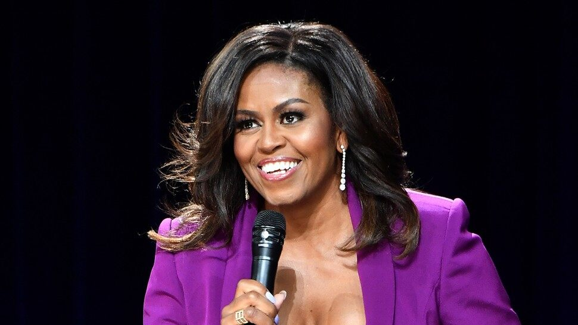

If you could visit anywhere in the world, where would it be?
Of these places, the top one on my list is London. I have always been fascinated with the culture and lifestyle. I also really enjoy the accents and am excited that I will be visiting the UK with my family next summer. I am looking forward to seeing the Big Ben and Buckingham Palace. There is so much history to experience and food to enjoy.

Of this list of people, the person I admire the most is Michelle Obama. The work she has done as First Lady and work she continues to do is inspiring. I have read her book, Becoming, and it provided amazing insight on her time in the White House and her initiatives. She advocates for education, women's rights, health and wellness, as well as supports soldiers and their families. She has inspired many people with her work, including myself.
More information about Michelle Obama.
Giraffe